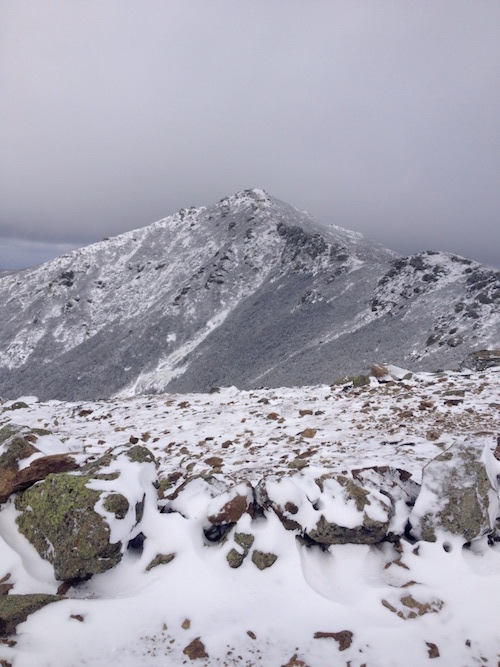
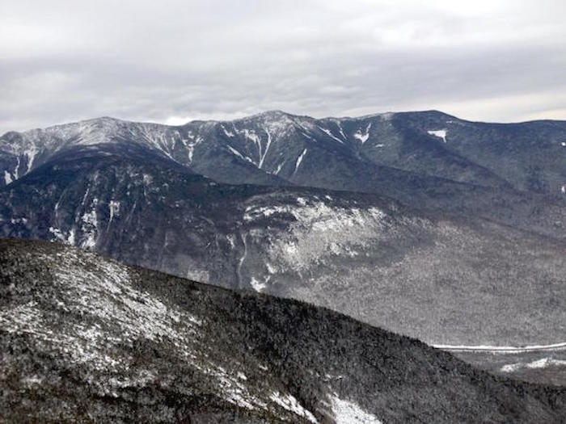
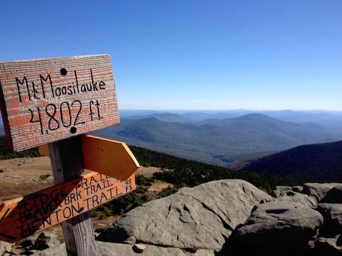
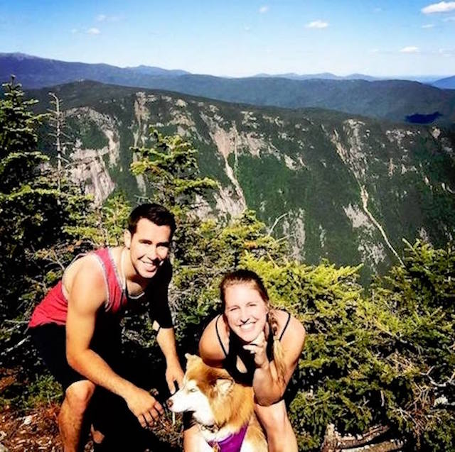

Home
NH 48 4000 Footers
Top Rated 4000' Footers
Difficulty Rating
More Top NH Hikes Under 4000'
Hiking Bucket List
What to Pack
Take a Hike- The NH 48 4000 Footers
My Top Rated 4000 Footers
Mount Lafayette

Hike Mount Lafayette
Cannon

Hike Cannon Mountain
Moosilauke

Hike Mount Moosilauke
Mount Garfield
Hike Mount Garfield
Mount Willey

Hike Mount Willey